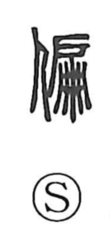

偏

Uncategorized
Kun: katayoru, hitoeni | On: hen
biased ・ one-sided ・ to lean ・ solely
Explanation
偏 is a phono-semantic character: the person element 亻 combines with the phonetic 扁 (hen). 扁 originally depicts a braided single-leaf swing door, evoking the idea of a single side or ‘one,’ which lends the character its core sense of leaning to one side, being partial, and—when used adverbially—‘wholly, solely.’ Already in the Shuowen it is glossed as ‘to incline; one-sided,’ and it is used for senses such as ‘to lean,’ ‘one,’ ‘one side,’ and ‘earnestly/solely.’ The nuance appears in compounds like 偏枯 (henko), meaning lateral paralysis, and tradition tells that Yu, the flood-controlling sage, became half paralyzed from his ceaseless labors.